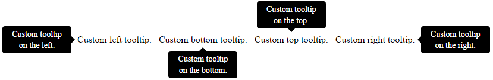

How do I add a tool tip to a span element?
In the following code, I want a tool-tip to come up when the user hovers the span, how do I do that? I don't want to use any links.
<span> text </span>
Answer
Here's the simple, built-in way:
<span title="My tip">text</span>
That gives you plain text tooltips. If you want rich tooltips, with formatted HTML in them, you'll need to use a library to do that. Fortunately there are loads of those.
Suggest
Custom Tooltips with pure CSS - no JavaScript needed:
Example here (with code) / Full screen example
As an alternative to the default title attribute tooltips, you can make your
own custom CSS tooltips using :before/:after pseudo elements and HTML5
data-* attributes.
Using the provided CSS, you can add a tooltip to an element using the data-
tooltip attribute.
You can also control the position of the custom tooltip using the data-
tooltip-position attribute (accepted values: top/right/bottom/left).
For instance, the following will add a tooltop positioned at the bottom of the span element.
<span data-tooltip="Custom tooltip text." data-tooltip-position="bottom">Custom bottom tooltip.</span>

How does this work?
You can display the custom tooltips with pseudo elements by retrieving the
custom attribute values using the attr() function.
[data-tooltip]:before { content: attr(data-tooltip); }
In terms of positioning the tooltip, just use the attribute selector and change the placement based on the attribute's value.
Example here (with code) / Full screen example
Full CSS used in the example - customize this to your needs.
[data-tooltip] { display: inline-block; position: relative; cursor: help; padding: 4px; } /* Tooltip styling */ [data-tooltip]:before { content: attr(data-tooltip); display: none; position: absolute; background: #000; color: #fff; padding: 4px 8px; font-size: 14px; line-height: 1.4; min-width: 100px; text-align: center; border-radius: 4px; } /* Dynamic horizontal centering */ [data-tooltip-position="top"]:before, [data-tooltip-position="bottom"]:before { left: 50%; -ms-transform: translateX(-50%); -moz-transform: translateX(-50%); -webkit-transform: translateX(-50%); transform: translateX(-50%); } /* Dynamic vertical centering */ [data-tooltip-position="right"]:before, [data-tooltip-position="left"]:before { top: 50%; -ms-transform: translateY(-50%); -moz-transform: translateY(-50%); -webkit-transform: translateY(-50%); transform: translateY(-50%); } [data-tooltip-position="top"]:before { bottom: 100%; margin-bottom: 6px; } [data-tooltip-position="right"]:before { left: 100%; margin-left: 6px; } [data-tooltip-position="bottom"]:before { top: 100%; margin-top: 6px; } [data-tooltip-position="left"]:before { right: 100%; margin-right: 6px; } /* Tooltip arrow styling/placement */ [data-tooltip]:after { content: ''; display: none; position: absolute; width: 0; height: 0; border-color: transparent; border-style: solid; } /* Dynamic horizontal centering for the tooltip */ [data-tooltip-position="top"]:after, [data-tooltip-position="bottom"]:after { left: 50%; margin-left: -6px; } /* Dynamic vertical centering for the tooltip */ [data-tooltip-position="right"]:after, [data-tooltip-position="left"]:after { top: 50%; margin-top: -6px; } [data-tooltip-position="top"]:after { bottom: 100%; border-width: 6px 6px 0; border-top-color: #000; } [data-tooltip-position="right"]:after { left: 100%; border-width: 6px 6px 6px 0; border-right-color: #000; } [data-tooltip-position="bottom"]:after { top: 100%; border-width: 0 6px 6px; border-bottom-color: #000; } [data-tooltip-position="left"]:after { right: 100%; border-width: 6px 0 6px 6px; border-left-color: #000; } /* Show the tooltip when hovering */ [data-tooltip]:hover:before, [data-tooltip]:hover:after { display: block; z-index: 50; }